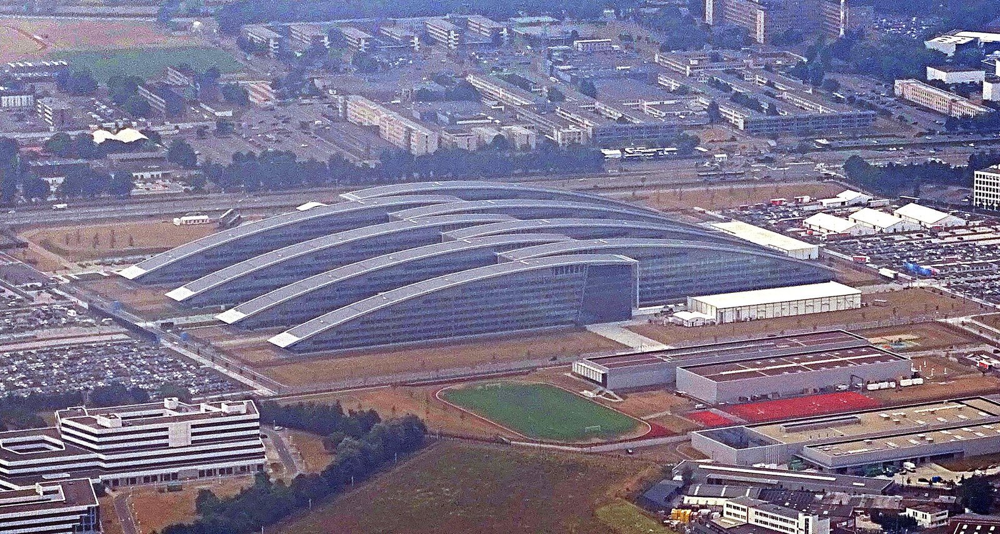

In 3 punti · Mondo
Ucraina: l'Europa ha la squadra, ma non ancora il mandato
Cinque Paesi e le istituzioni Ue rappresenteranno l'Europa ai negoziati di pace. Ma non c'è accordo su cosa chiedere alla Russia, e il Cremlino dice di non vedere il valore aggiunto europeo.

L'Europa ha deciso chi la rappresenterà ai negoziati di pace sull'Ucraina, ma non ha ancora deciso cosa chiedere. E da Mosca il Cremlino dice di non capire che cosa aggiungerebbe la presenza europea. Ecco a che punto siamo, dopo l'ingresso dell'Europa al tavolo.
1Chi c'è
Al vertice informale dei leader Ue di Dublino, a metà novembre, è stata scelta una squadra al posto di un singolo inviato:
- Cinque Paesi della «coalizione dei volenterosi»: Francia, Germania, Italia, Polonia e Regno Unito, che non fa parte dell'Ue. Secondo La Notizia, la composizione riprende una proposta della presidente del Consiglio Giorgia Meloni in una lettera ad António Costa.
- Le istituzioni Ue: i rappresentanti del presidente del Consiglio europeo António Costa e della Commissione di Ursula von der Leyen.
- Chi non c'è: l'Alta rappresentante per la politica estera Kaja Kallas. Secondo Il Foglio, alcuni Stati membri la considerano troppo massimalista nei confronti della Russia.
2Cosa manca: il mandato
Manca il mandato politico e negoziale: cosa chiedere alla Russia e quali sono le linee rosse dell'Europa. Secondo Il Foglio, tra i governi «non c'è consenso sulla posizione dell'Ue». I temi sul tavolo sono la tregua, le garanzie di sicurezza per Kiev, da discutere nella coalizione dei volenterosi in coordinamento con la NATO, e la ricostruzione. Secondo fonti italiane citate da Notizie Geopolitiche, Roma vorrebbe trattare i tre temi insieme, per evitare che il cessate il fuoco resti separato dagli accordi di stabilità. Costa ha ribadito che «solo l'Ucraina ha la legittimità di decidere sulle questioni riguardanti il proprio territorio e la propria sovranità».
3Cosa dice Mosca
Il 12 novembre l'inviato statunitense Steve Witkoff aveva detto che gli europei avrebbero partecipato al prossimo round di colloqui. Il 24 novembre il portavoce del Cremlino Dmitrij Peskov ha detto: «Non comprendiamo ancora appieno quale valore aggiunto potrebbe apportare la partecipazione europea». Ha aggiunto che per il prossimo round «non è stata ancora fissata alcuna data». Il giorno dopo, secondo Interfax, ha ammesso che con alcuni rappresentanti europei «ci sono alcuni contatti di lavoro», che però finora «non sono stati efficaci». Per Mosca gli europei non hanno un ruolo adeguato nel dialogo finché continuano a fornire armi a Kiev. Il ministro degli Esteri Antonio Tajani ha risposto che «l'Italia siede già al tavolo delle trattative, come parte della delegazione europea» e che «non si può raggiungere una vera pace senza l'Europa». Il ministro degli Esteri Sergej Lavrov ha ripetuto che la posizione russa resta legata agli obiettivi fissati da Putin nel giugno 2024.
Intanto
Secondo il presidente ucraino Volodymyr Zelensky, gli inviati americani Witkoff e Jared Kushner vorrebbero un accordo «idealmente entro gennaio». Zelensky ha detto che l'Ucraina vuole la pace, ma «non solo a spese dell'Ucraina», e che cedere il Donbas «potrebbe portare alla sconfitta». Il 26 e 27 novembre i leader Ue si riuniscono a Bruxelles in un vertice straordinario sul bilancio 2028-2034 e sui fondi per l'Ucraina: la Commissione propone fino a 45 miliardi di euro in più per il 2027.
La domanda di ParrhesIA: ci si può sedere a un tavolo senza aver deciso cosa chiedere?
Fonti
- Il Foglio, 13 novembre 2026: l'Ue ha la squadra per il dialogo con Putin, ma non le linee rosse
- La Notizia, 13 novembre 2026: accordo in Ue sui negoziatori per l'Ucraina
- Notizie Geopolitiche, 14 novembre 2026: ora si discute il mandato negoziale
- Ansa, 12 novembre 2026: Witkoff, gli europei parteciperanno al prossimo round
- TASS, 24 novembre 2026: le dichiarazioni del Cremlino sul ruolo dell'Europa
- Demócrata (Interfax), 25 novembre 2026: la Russia ammette contatti con l'Ue
- LaPresse, 25 novembre 2026: le notizie del giorno, Tajani
- Sky TG24, 24 novembre 2026: guerra Ucraina-Russia, le notizie del giorno
- Eurointegration, 24 novembre 2026: l'Ue discute i fondi per l'Ucraina per il 2027
Questo articolo è stato scritto con l'intelligenza artificiale e verificato sulle fonti indicate. Hai trovato un errore? Segnalalo sui nostri social: le correzioni vengono pubblicate qui con la data della modifica.